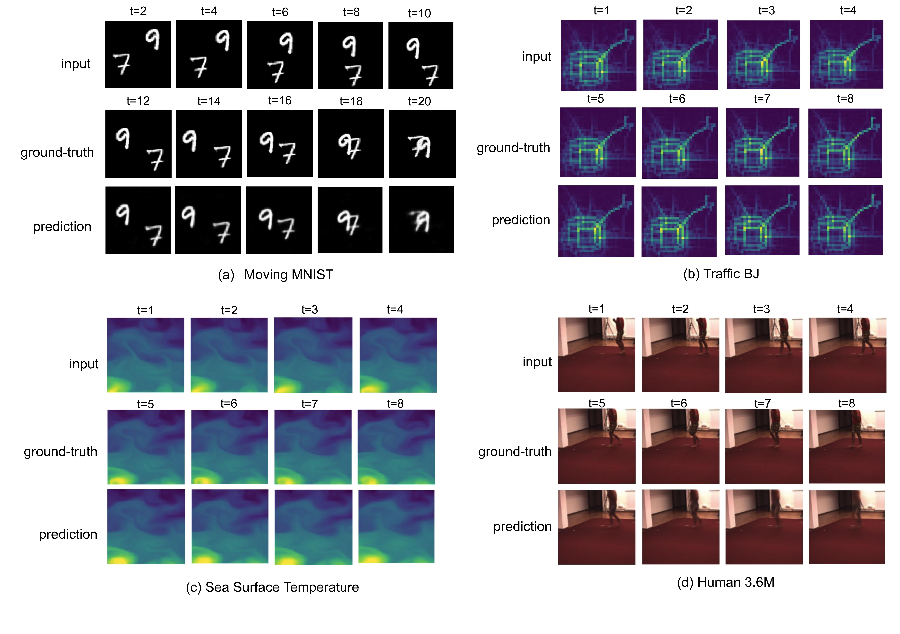

(BMVC 2022)
* denotes equal contribution.
|  |
@InProceedings{taylorswiftnet,
author = {Pourheydari, Saber and Bahrami, Emad and Fayyaz, Mohsen and Francesca, Gianpiero and Noroozi, Mehdi and Gall, Juergen},
title = {TaylorSwiftNet: Taylor Driven Temporal Modeling for Swift Future Frame Prediction},
booktitle = {British Machine Vision Conference (BMVC)},
year = {2022}
}